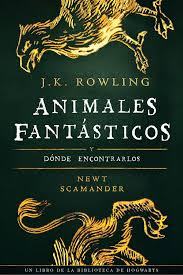

Lord Voldemort es el antagonista de esta saga.El nombre de nacimiento de Lord Voldemort es Tom Marvolo Riddle. Tom Marvolo Riddle nació en un orfanato después de que su madre, Mérope Gaunt, muriera en el parto. Allí le hizo maldades variadas a sus compañeros (les robaba cosas, los hacía sufrir, etc). He incluso también pudo matar animales, ya con la edad de 11 años podía hablar con serpientes (Parsel).
Tras 11 años llegó al orfanato Albus Dumbledore, que en ese momento era tan solo un profesor de Hogwarts, para entregarle la carta de admisión, la que Tom aceptó. En sus años en Hogwarts, Tom realizó maldades junto con sus nuevos seguidores, que luego se llamarían Mortífagos. Ningún profesor se dio cuenta de que las tragedias sucedidas en Hogwarts, como la apertura por primera vez de la cámara secreta y sus principales incidentes. Además, Tom era uno de los alumnos predilectos de varios profesores entre ellos Horace Slughorn.
En uno de los años de Tom, exactamente en el quinto año, Tom abrió la cámara de los secretos. El monstruo de Salazar Slytherin, el basilisco mató a una alumna, Myrtle La Llorona. Cuando la escuela amenazaba con cerrar, Tom culpó a Rubeus Hagrid, el cual ocultaba una pequeña acromantula, una criatura mágica con forma parecida a una araña, llamada Aragog en el castillo y de ser el responsable del incidente. Como consecuencia Hagrid fue expulsado, aunque posteriormente Dumbledore vigiló a Tom días y noches enteras después del incidente y logró demostrar que Hagrid era inocente de aquel incidente.
En su adolescencia se describe a Tom Riddle como un joven muy apuesto, de cabello negro, tez blanca y ojos de color castaño, alto y muy parecido a su padre. Después de su "resurrección", Voldemort es descrito como un ser alto, calvo, pálido cual muerto viviente, con ojos rojos con pupilas verticales, en lugar de una nariz tiene dos orificios nasales como rendijas parecidos a los de una serpiente, dedos de la mano anormalmente largos, con una boca sin labios y una voz fría, aguda y susurrante.
|
|
|
|
 |